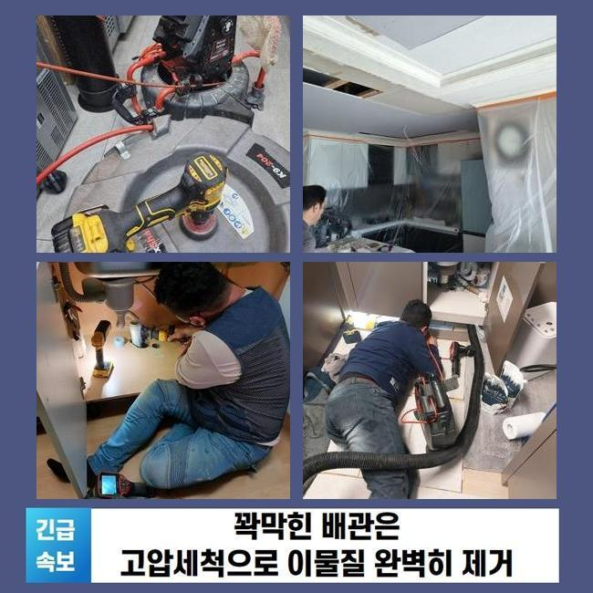
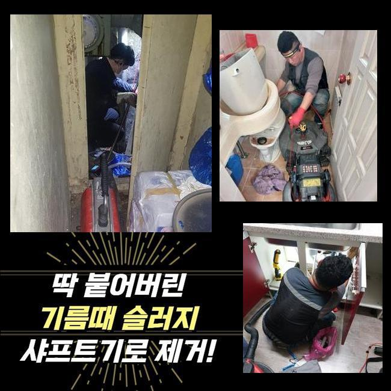
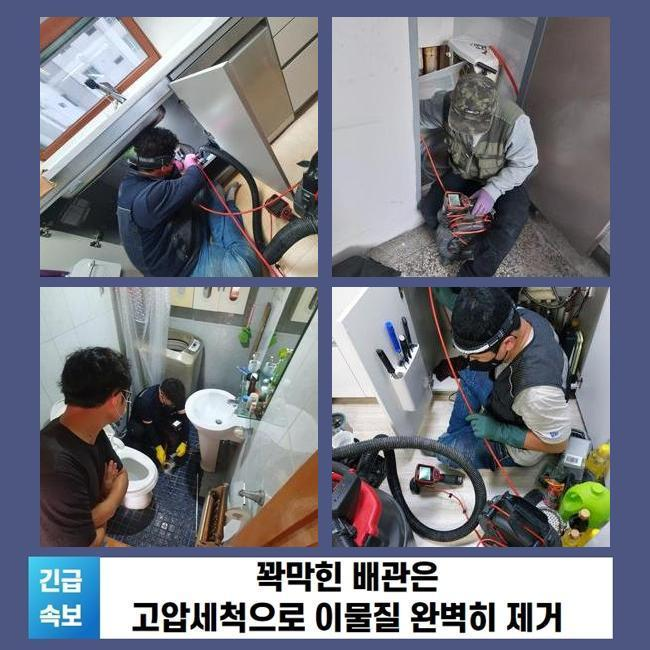
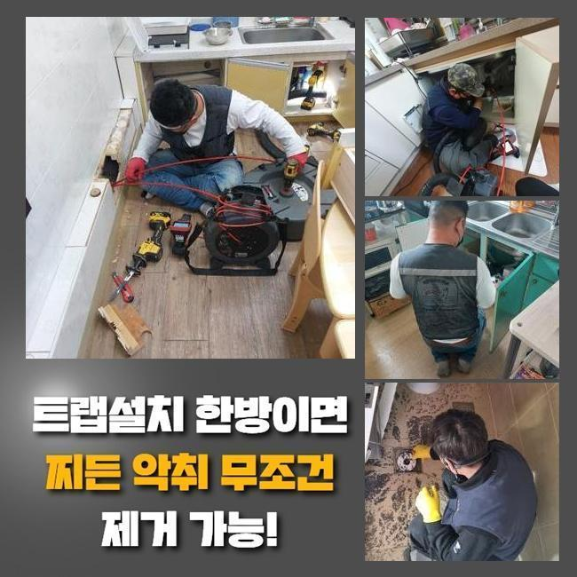
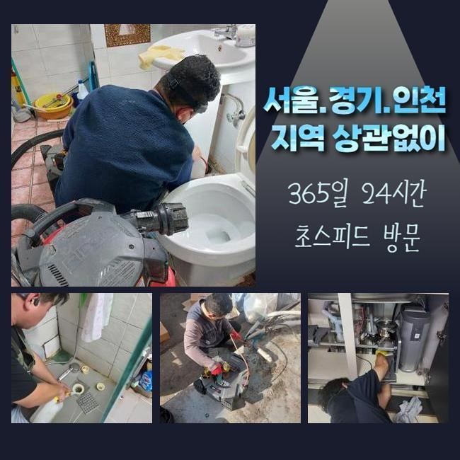
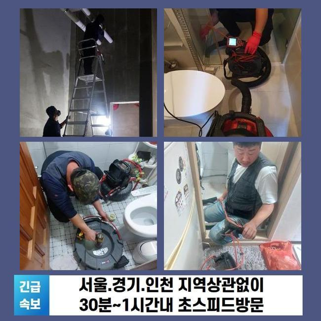

🏠 성북구 성북동씽크대배수관막힘 동선동 하수관고압세척 누수
용인 싱크대막힘 전문 시공 후기

📋 작업 개요
- 위치: 용인
- 서비스 유형: 싱크대막힘, 하수구막힘, 배관막힘, 집수정막힘, 누수수리, 배관청소, 고압세척
- 작업 일시: 2025. 4. 12. 20:42
- 업체명: 하수구수사대 (010-5615-2118)
🔍 문제 상황
성북구 성북동씽크대배수관막힘 동선동 하수관고압세척 누수
1주일전 물막힘이 생겨 불편들을 호소하셨던 고객에게 연락이 왔었죠
고객분의 경우 배수관에 대한 전문성을 갖춘 분은 아니였으나 일정 수준의 지식내용은 가지고있던 모습이였어요
의뢰자분은 입구쪽을 깨끗히하고 문제 위치를 찾아보고자 관찰해보았으나 어디쪽이 시발점인것인지 알기가 힘들어 저희들에게 연락을 주셨던 상황이였죠
현장에 방문드리니 지속적인 자가적인 조치들로 지치셨던것이 보였어요
고객분의 입장에선 까닭들을 찾을 수 없는 사례가 상당합니다
해당 장소에서 하수도를 확인해봤더니 내측엔 요소는 없었습니다
그리고 바깥에 위치한 관로에서 까닭이 발현되었을 확률들이 높을거라 판단하였습니다
더불어 나무들이 많이 있다면 땅 밑으로 말려 들어가거나 잔해물이 빠질 가능성들이 존재합니다
다양한 요소로 인하여 바깥쪽의 관로들이 막히는상황에 노출됩니다

🔎 원인 분석
💡 전문가 진단: 정밀 진단 장비를 사용하여 슬러지의 고착 여부를 판명하고 타격/세척 작업을 실시했습니다.
고객님에게 현상황의 예상되는 원인들에 안내하고 외측을 진단해봐야할 것을 안내드렸어요
의뢰자께서도 설명드린 사항들을 들으신 뒤 바깥쪽 검사절차에 동의했습니다
작업들을 착수하기 이전에 여러 준비들을 거쳤어요
배수결함의 까닭은 특정할 수가 없죠
외부설비의 경우 담배꽁초와 같은 근방에서 유입된 여러 폐기물들이 하수도로 축적됩니다
외측에 비소식이 있을때 외부에 위치한 설비의 상황들을 체크해주지않으면 증세규모는 장담할 수 없어요
또한, 나무의 지면 밑에서부터 들어가는 경우들도 자주 일어나요
배관위에 자리하거나 심할땐 파손을 유발하는 트러블까지 야기시킵니다
위와같은 문제에선 유수가 정체되는 탓에 부차적 문제까지 생겨버립니다
그리고 내구성이 떨어져있다거나 파손에도 배수가 막혀버려 막히는 사태가 발발합니다

🔧 작업 과정
매립시기가 꽤 지나 하수관이 노후된다면 여러 폐기물들이 침전되는 조건이 갖춰져요
이어서 대다수 통수오류의 까닭은 주기적인 청소들을 안하기 때문이에요
그때그때 확인하지않을 시, 작은 잔재들이 쌓이면서 정체가 심해질거에요
그래서 바깥쪽을 시기적절하게 체크해보고 청소시키는게 선제적인 방법으로 괄목할만한 방식으로 작용합니다
여러가지의 이유들을 알고서 선제적으로 대비해주는게 우선과제에요
내시경으로 외부시설의 상태들을 확인했어요
내시경으로 살폈더니 하수관의 구간별로 잔해와 기름때문에 범벅이 된 형상이 관찰되었습니다
이토록 하수도가 막힌다면 물의 배수가 이뤄질 수가 없어서 누수되어버리는 사태까지 나타나기에 대응을 취하시는게 요구됩니다
상태를 보고 잔해물이 누적된 지점을 타겟하여 청소해보기로 했답니다
고수압의 방법을 준비하여 고수압으로 배수관을 구석구석 세척해주었죠
덩어리졌던 슬러지들을 안에서부터 청소해주니 막힌상태의 하수들이 흘렀는데요
처음엔 부유물들이 흘러나왔고 잔해물이 빠지며 집수정으로 신속히 본 모습을 되찾았어요
물이 신속히 배출되는 모습들을 체크해보며 의뢰인분까지 전부 보셨습니다
전 과정이 이행되면서 의뢰인분과 얘기하면서 이물이 축적되는 원인에 대해서도 안내하니 의뢰인분도 평소 궁금해했던 사안을 질문했어요
이것으로 의뢰자께서는 관리와 연관된 중요도를 인지하게되었고 추후에도 적재적소의 검수의 불가피성을 공감해주셨어요
성황리에 청소가 완료되고 배수관이 완전히 되돌아오고 의뢰인분은 배출되는 현상도 볼 수 있었어요


✅ 작업 완료
고객님에게도 결과들에 대해 말씀드리고 추후에도의 관리방식들도 일러드렸습니다
때때로 외측을 살펴보고 필요하다면 전문성이 두드러지는 대응을 고려하는것이 최선이라고 안내드렸어요
결과적으로 고객께서 피해들을 해결해드려서 안심했습니다
고객분의 안심할 수 있는 배수상황에 보탬으로 다가설수있게 편하실 때 저희의 전문가들에게 연락주세요



⚠️ 베란다 누수 및 방수 관리 방법
- ✅ 비가 많이 올 때 창틀 주변이나 아래층 천장에 얼룩이 생기는지 정기적으로 확인해 보세요.
- ✅ 우수관 주변 실리콘 마감이 들뜨거나 깨진 틈새가 있는지 손상 여부를 수시로 체크하세요.
- ✅ 베란다 바닥 타일의 줄눈(메지)이 소실되면 그 틈으로 물이 침투하여 누수가 유발됩니다.
- ✅ 누수 의심 증상 발견 시 방치하면 아래층 손실이 커지므로 즉시 전문가의 진단을 받으십시오.
💡 핵심 정리
- 확실한 장비 작업(내시경 점검 및 샤프트 스케일링)으로 원인을 뿌리 뽑습니다.
- 작업 후 1년 이내에 동일한 부위 재발 시 100% 무상 A/S 서비스를 보장합니다.
- 서울 · 경기 · 인천 전 지역에 24시간 언제든 긴급 출동할 수 있도록 항시 대기 중입니다.
❓ 자주 묻는 질문 (FAQ)
🚨 용인 싱크대막힘 문제로 고민이신가요?
정확한 원인 진단과 확실한 시공으로 재발 없는 해결을 약속드립니다.
24시간 긴급 출동 | 서울 · 경기 · 인천 전지역 | 1년 내 재발 시 무상 A/S